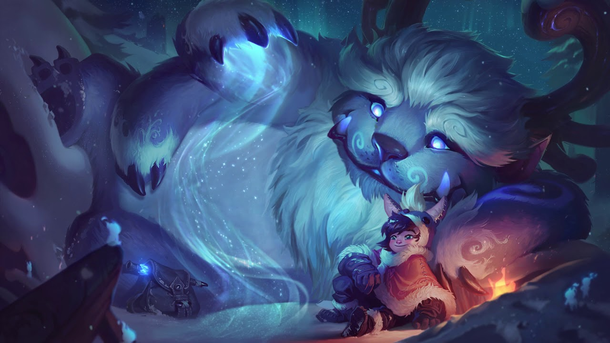

아주 오랜 옛날, 무시무시한 괴물을 물리쳐 영웅이 되고 싶은 소년이 있었다. 하지만 소년이 발견한 것은 마법을 부리는, 단지 친구가 필요했던 외로운 설인이었다. 고대의 힘과 눈싸움으로 하나가 된 소년 누누와 설인 윌럼프는 프렐요드 곳곳을 누비며 상상 속의 모험을 떠난다. 실종된 누누의 어머니를 찾아 나선 누누와 윌럼프. 이들이 누누의 어머니를 구한다면 영웅이 될 수 있을지도...

프렐요드의 부름
누누가 윌럼프와 주변 아군 1명의 공격 속도와 이동 속도를 증가시키고, 윌럼프의 기본 공격이 대상 근처의 적에게 피해를 줍니다.
잡아먹기
윌럼프가 미니언, 몬스터, 또는 적 챔피언을 물어뜯어 피해를 입히고 체력을 회복합니다.
데굴데굴 눈덩이!
윌럼프가 굴릴수록 크기와 속도가 증가하는 눈덩이를 생성합니다. 눈덩이는 적에게 피해를 입히고 공중으로 띄워 올립니다.
눈덩이 팡팡팡
누누가 눈덩이를 난사해 적에게 피해를 입힙니다. 누누의 공격이 끝나면 윌럼프가 눈덩이에 맞은 챔피언이나 대형 몬스터를 속박합니다.
절대 영도
누누와 윌럼프가 일정 범위에 강력한 눈보라를 생성하여 적을 둔화시키고 눈보라가 끝난 후 범위 내 적에게 큰 피해를 입힙니다.